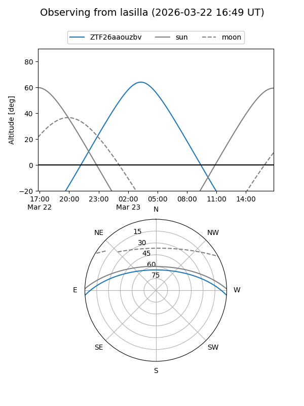
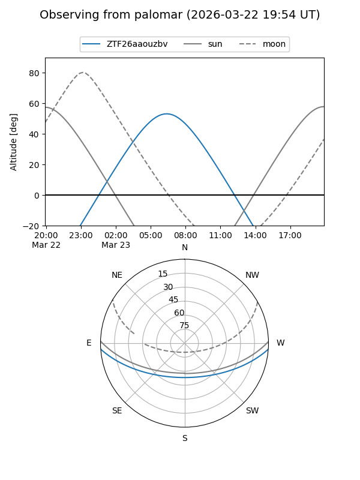

ZTF26aaouzbv
Target ZTF26aaouzbv at 2026-03-23 07:48
Aliases and brokers:
FINK: link
Lasair: link
ALeRCE: link
alt names
ZTF26aaouzbv (ztf,fink_ztf)
Coordinates:
equatorial (ra, dec) = 159.1029,-3.29790
equatorial (HMS+DMS) = 10:36:24.69,-03:17:52.43
galactic (l, b) = (250.6915,+45.43738)
Flags:
Photometry:
last ztfg=17.48
1 ztfg detections
Lightcurve
Visibility


Additional plots